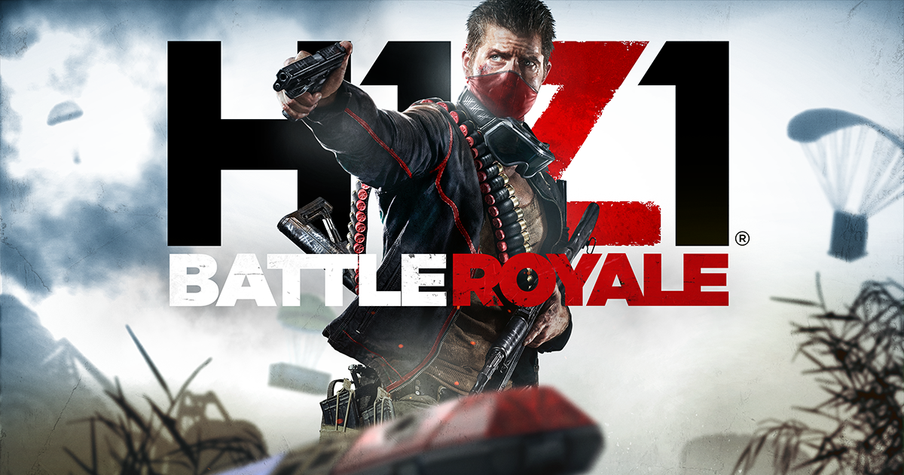
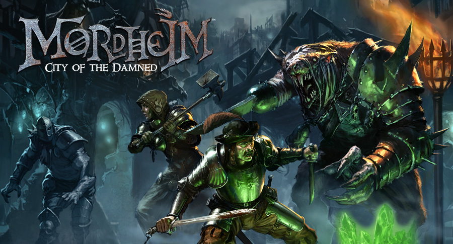
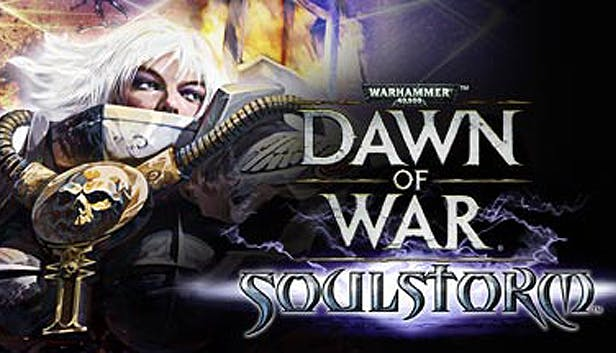

Site Purpose
This site is a presentation of my Steam collection.

I first installed steam on a laptop, in March 2015. Dota 2 was the first game I ever played via steam, being free to play and having been strongly recommended by several of my friends. Though I play a variety of different genres and games, Dota 2 is still the one I play the most, and have put the most time into, equating to over 100 days of straight gameplay over 4 years. After all this time, I have 102 games on steam alone, and a combined value of 6864 Hours of gameplay. This means that on steam games alone I have spent 286 days straight.
Games
Below are all the games in my steasm library that are above 2 hours of play time, along with their approximate number of days played.
7 Days to die

10 Hours
0.4 Days
7 Days to Die is an open-world game that is a unique combination of first person shooter, survival horror, tower defense, and role-playing games.
Aragami
8 Hours
0.3 Days
Aragami is a third person stealth game that casts you as an undead assassin with the power to control the shadows.
Ark Survival Evolved
120 Hours
5 Days
Stranded on the shores of a mysterious island, you must learn to survive. Use your cunning to kill or tame the primeval creatures roaming the land, and encounter other players to survive, dominate... and escape!
Arma 3

90 Hours
3.75 Days
Experience true combat gameplay in a massive military sandbox. Deploying a wide variety of single- and multiplayer content, over 20 vehicles and 40 weapons, and limitless opportunities for content creation, this is the PC’s premier military game.
Black Desert Online
18 Hours
0.75 Days
Black Desert Online is a sandbox, living-world MMORPG. Experience fast-paced, action-packed combat, hunt monsters and huge bosses, fight with friends in a guild to siege nodes and conquer castles, train your life skills such as fishing, trading, crafting, cooking, and much more!
Call of Duty Black Ops

113 Hours
4.7 Days
The biggest first-person action series of all time and the follow-up to critically acclaimed Call of Duty®: Modern Warfare 2 returns with Call of Duty®: Black Ops.
Call of Duty Black Ops 2

8 Hours
0.3 Days
Pushing the boundaries of what fans have come to expect from the record-setting entertainment franchise, Call of Duty®: Black Ops II propels players into a near future Cold War
Chivalry Medieval Warfare

30 Hours
1.25 Days
Besiege castles and raid villages in Chivalry: Medieval Warfare, a fast-paced medieval first person slasher with a focus on multiplayer battles
Citadel: Forged With Fire

3 Hours
0.125 Days
This massive online sandbox RPG features elements of magic, spellcasting, building, exploring and crafting. As a newly minted apprentice of the magic arts, you will set off to the dangerous world of Ignus. Tame mighty beasts, forge alliances, explore uncharted territories or fight for dominance!
Counter Strike Global Offensive

871 Hours
36.3 Days
Counter-Strike: Global Offensive (CS: GO) expands upon the team-based action gameplay that it pioneered when it was launched 19 years ago. CS: GO features new maps, characters, weapons, and game modes, and delivers updated versions of the classic CS content (de_dust2, etc.).
Dark Souls Remastered

2 Hours
0.08 Days
Then, there was fire. Re-experience the critically acclaimed, genre-defining game that started it all. Beautifully remastered, return to Lordran in stunning high-definition detail running at 60fps.
Dota 2

2623 Hours
109.3 Days
Every day, millions of players worldwide enter battle as one of over a hundred Dota heroes. And no matter if it's their 10th hour of play or 1,000th, there's always something new to discover. With regular updates that ensure a constant evolution of gameplay, features, and heroes, Dota 2 has taken on a life of its own.
Elder Scrolls V Skyrim Special Edition

38 Hours
1.6 Days
Winner of more than 200 Game of the Year Awards, Skyrim Special Edition brings the epic fantasy to life in stunning detail. The Special Edition includes the critically acclaimed game and add-ons with all-new features like remastered art and effects, volumetric god rays, dynamic depth of field, screen-space
For Honor

395 Hours
16.5 Days
Carve a path of destruction through an intense, believable battlefield in For Honor.
Garry's Mod

35 Hours
1.5 Days
Garry's Mod is a physics sandbox. There aren't any predefined aims or goals. We give you the tools and leave you to play
GTA V

5 Hours
0.2 Days
Los Santos is a city of bright lights, long nights and dirty secrets, and they don’t come brighter, longer or dirtier than in GTA Online: After Hours. The party starts now
H1Z1
8 Hours
0.3 Days
Z1 Battle Royale is a Free to Play, fast-paced, action arcade, competitive Battle Royale. Staying true to its "King of the Kill" roots, the game has been revamped and restored to the classic feel, look, and gameplay everyone fell in love with. Play solo, duos, or fives and be the last ones standing.
Heroes and Generals

56 Hours
2.3 Days
Shoot, blow sh!t up, fly or bark orders in the ultimate Free-to-Play, large scale, multiplayer, shooter experience. Thousands of players in multiple battles fighting one massive war of nations. The first to capture 15 cities takes the glory.
Hunt: Showdown
44 Hours
1.8 Days
Hunt: Showdown is a competitive first-person PvP bounty hunting game with heavy PvE elements, from the makers of Crysis. Set in the darkest corners of the world, it packs the thrill of survival games into a match-based format.
Insurgency
56 Hours
2.3 Days
Take to the streets for intense close quarters combat, where a team's survival depends upon securing crucial strongholds and destroying enemy supply in this multiplayer and cooperative Source Engine based experience.
Insurgency Sandstorm

8 Hours
0.3 Days
Insurgency: Sandstorm is a team-based, tactical FPS based on lethal close quarters combat and objective-oriented multiplayer gameplay. Experience the intensity of modern combat where skill is rewarded, and teamwork wins the fight.
Left 4 Dead 2

94 Hours
3.9 Days
Set in the zombie apocalypse, Left 4 Dead 2 (L4D2) is the highly anticipated sequel to the award-winning Left 4 Dead, the #1 co-op game of 2008. This co-operative action horror FPS takes you and your friends through the cities, swamps and cemeteries of the Deep South, from Savannah to New Orleans
The Lord of the Rings Online

525 Hours
21.9 Days
Join the world’s greatest fellowship of players in the award-winning online re-creation of J. R. R. Tolkien’s legendary Middle-earth.
Middle Earth Shadow of Mordor

31 Hours
1.3 Days
Fight through Mordor and uncover the truth of the spirit that compels you, discover the origins of the Rings of Power, build your legend and ultimately confront the evil of Sauron in this new chronicle of Middle-earth.
Middle Earth Shadow of War
32 Hours
1.3 Days
Experience an epic open-world brought to life by the award-winning Nemesis System. Forge a new Ring of Power, conquer Fortresses in massive battles and dominate Mordor with your personal orc army in Middle-earth™: Shadow of War™.
Mordheim City of the Damned
12 Hours
0.5 Days
Mordheim: City of the Damned is the first video game adaptation of Games Workshop's cult classic tabletop game Mordheim. Set in the Warhammer World's decimated Empire city, Mordheim: City of the Damned is a turn-based tactical game where you lead warbands into bloody and lethal skirmishes.
Never Winter
12 Hours
0.5 Days
Neverwinter is a free, action MMORPG based on the acclaimed Dungeons & Dragons fantasy roleplaying game. Epic stories, action combat and classic roleplaying await those heroes courageous enough to enter the fantastic world of Neverwinter!
No More Rooom In Hell

15 Hours
0.625 Days
"When there's no more room in hell, the dead will walk the earth."A tribute to the highly acclaimed film series in which the above quote originated from, No More Room in Hell (PC Gamer's Mod of the Year 2011, ModDB's Editor Choice Multiplayer Mod of the Year 2011), is a co-operative realistic first person
Orion Prelude

3 Hours
0.125 Days
Work together to survive the devastating Dinosaur horde in huge, endless environments.
Payday 2

114 Hours
4.75 Days
PAYDAY 2 is an action-packed, four-player co-op shooter that once again lets gamers don the masks of the original PAYDAY crew - Dallas, Hoxton, Wolf and Chains - as they descend on Washington DC for an epic crime spree.
Rainbow Six siege

543 Hours
22.6 Days
Tom Clancy's Rainbow Six Siege is the latest installment of the acclaimed first-person shooter franchise developed by the renowned Ubisoft Montreal studio.
Ring of Elysium
180 Hours
7.5 Days
Escape an astonishing disaster in Ring of Elysium, a battle royale shooter developed by Aurora Studio.
Shadow Warrior 2

2 Hours
0.08 Days
Shadow Warrior 2 is the stunning evolution of Flying Wild Hog’s offbeat first-person shooter starring the brash warrior Lo Wang, who must again wield a devastating combination of guns, blades, magic and wit to strike down the demonic legions overwhelming the world.
Smite

191 Hours
7.96 Days
Join over 30 million SMITE players! Wield Thor’s hammer, transform your foes to stone as Medusa, or choose from the other 100+ mythological icons. You’ll always have more to discover with free updates every two weeks. Enter the Battleground of the Gods!
Spacehulk Deathwing Enhanced Edition
5 Hours
0.2 Days
Space Hulk: Deathwing - Enhanced Edition is a First-Person Shooter based on Games Workshop’s cult classic board game set in Warhammer 40,000 universe. Expanding upon the original game, and featuring a host of new content, new features and a richer multiplayer mode.
Total War Warhammer 1

132 Hours
5.5 Days
Addictive turn-based empire-building with colossal, real-time battles, all set in a world of legendary heroes, giant monsters, flying creatures and storms of magical power.
Total War Warhammer 2

12 Hours
0.5 Days
Strategy gaming perfected. A breath-taking campaign of exploration, expansion and conquest across a fantasy world. Turn-based civilisation management and real-time epic strategy battles with thousands of troops and monsters at your command.
Dawn of War 1
19 Hours
0.8 Days
Prepare yourself for the grim, dark future of the 41st millennium, where alien races battle mankind for galactic domination in a universe of unending war. Personalize your armies with a revolutionary unit customization tool that gives you the ability to choose your armies insignias, banners, squad colors and names.
Dawn of War Soulstorm
22 Hours
0.9 Days
The third and final expansion to the genre-defining and critically-acclaimed RTS, Dawn of War. In Soulstorm, two new armies are introduced – Sisters of Battle and Dark Eldar - raising the total number of playable armies to nine.
Warhammer 40,000 Eternal Crusade

262 Hours
10.9 Days
Eldar, Orks, Chaos or Space Marines, in the fiercest battles for universal peace, through any means. Try the Free Demo - or buy the Full Premium Game below. We will not give up.
Warhammer Vermintide

73 Hours
3 Days
Vermintide is an epic co-operative action combat adventure set in the End Times of the iconic Warhammer Fantasy world.
Warhammer Vermintide 2

33 Hours
1.4 Days
The sequel to the critically acclaimed Vermintide is a visually stunning and groundbreaking melee action game pushing the boundaries of the first person co-op genre. Join the fight now!
World of Tanks

11 Hours
0.45 Days
Action-packed MMO with PvP tank battles.